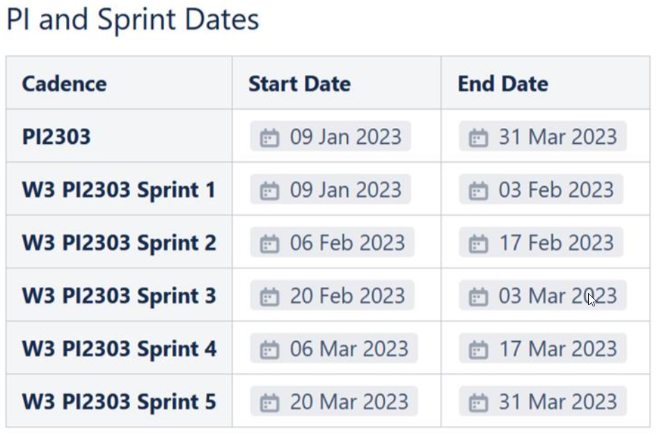

2. PI2303 Planning Input & SCRUM Org.
Planning input：
PJW3 Jira Board Info - wave 3 development - Docupedia (bosch.com)
xPER Tech Stack Roadmap: 1. xPER Milestone Goals - PJ-W3-PER - Docupedia (bosch.com)
xPER PI2303 Planning：
Project/System level requirement input:
PI 2303-Planning - wave 3 development - Docupedia (bosch.com)
Parking E2E feature: PJW3 Parking ART Backlog - Agile Board - tracker08 (bosch.com)
Driving
** PI2303 system requirement for driving – to be reviewed in Sprint1
SW Release Plan - wave 3 development - Docupedia (bosch.com)
Highway E2E: https://rb-tracker.bosch.com/tracker08/browse/CNWVIII-26004
Urban E2E: https://rb-tracker.bosch.com/tracker08/browse/CNWVIII-26005
Documentations: https://rb-tracker.bosch.com/tracker08/browse/CNWVIII-26006
HF: https://rb-tracker.bosch.com/tracker08/browse/CNWVIII-26007
from previous PI: https://rb-tracker.bosch.com/tracker08/browse/CNWVIII-26199
PI2303 Presentation Preparation - wave 3 development - Docupedia (bosch.com)
PI2303 Sprint Cadence：
- 
xPER PI2303 Planning presentations:
PI2303 Presentation Link - wave 3 development - Docupedia (bosch.com) — Please update Goal in the below this page → Per → GOAL link.
Dependency & Impediment & Risk Summarize xPER_ Dependency & Risk & Impediment - Agile Board - tracker08 (bosch.com)， If it cannot be reached with the required partner and the time, Jira Ticket hit W3_MNGSUPPORT
The Open Item of each Scrum team also played on the Component of its own team, playing the corresponding SUPPORTING FEATURE virtual team Label.
3. xPER RTE Org.
xPER RTE/SCRUM Master: ZhaoXin
PO: (both for parking&driving)
DF: LingLi
SF: Zhong Michael
Map service_driving: Sun Hecheng
Map_Service_parking & On_board_mapping: He Qiang
Loc&xdom&Calib: Mao Max
xPER ENG: Mao Donny(driving), Meng Yafei(parking?)?
Viper&Liper: Tang Yazhe&La Lei
SCRUM Boards:
Common field: Fix version = W3 Pi2303, sprint = w3 pi2303 sprint1 ~ 5, Component contains PER, Label, based on E2E Feature, play Parkinge2e, Driving2e or other virtual E2E team: Vehdebugmte2e, TestSiminfr AE2E, CrossBuildToolChaine2e, DataChaine2e.
SF_Driving Zhong Michael
Component: Static_Fusion_Driving, PER
Label: DrivingE2E;
SCRUM Board: PJ-W3-PER_ Static_Fusion_Driving - Agile Board - tracker08 (bosch.com)
SF_Parking Zhong Michael
Component: Static_Fusion_Parking; PER
Label: ParkingE2E;
SCRUM Board: PJ-W3-PER_Static_Fusion_Parking - Agile Board - tracker08 (bosch.com)
Map_Service_Driving Sun Hecheng
Component: Map_Service_Driving; PER
label: DrivingE2E,
SCRUM Board: PJ-W3-PER_Map_Service_Driving - Agile Board - tracker08 (bosch.com)
Map_Service_Parking & On_Board_Mapping He Qiang
Component: Map_Service_Parking, PER
Label: ParkingE2E;
SCRUM Board: PJ-W3-PER_Map_Service_Parking - Agile Board - tracker08 (bosch.com)
xPER_Engineering Shi Yan
Label: xPerEng; ParkingE2E, DrivingE2E
Component: PER
SCRUM Board: PJ-W3-xPerEng - Agile Board - tracker08 (bosch.com)
DF_Parking&Driving (one solution for both driving&parking) Ling Li Fusion
component: Dynamic_Fusion, PER
label: ParkingE2E, DrivingE2E; PER2
SCRUM Board link: PJ-W3-PER_Dynamic_Fusion - Agile Board - tracker08 (bosch.com)
Loc_driving Mao Max
Component: Loc_Driving , PER
Label: DrivingE2E;
SCRUM Board: PJ-W3-PER_Loc_Driving - Agile Board - tracker08 (bosch.com)
Loc_Parking Mao Max
Component: Loc_Parking , PER
Label: ParkingE2E;
SCRUM Board: PJ-W3-PER_Loc_Parking - Agile Board - tracker08 (bosch.com)
Calibration Mao Max
Component: Calibration, PER
Label: ParkingE2E, DrivingE2E
SCRUM Board: PJ-W3-PER_Calibration - Agile Board - tracker08 (bosch.com)
Dynamic_PER_Parking Tang Yazhe
Component: Dynamic_PER_Parking, PER
Label: ParkingE2E ; PER2
SCRUM Board: PJ-W3-PER_Dynamic_PER_Parking - Agile Board - tracker08 (bosch.com)
Epic:
Multiple object tracking for 2D object, 3D object and parking slot
Parking Slot detection module development in IPM images for parking
Dynamic/Static object detection in LiDar-M1 with 3D bbox level for parking
Dynamic/Static object detection in FrontView Camera for parking
Dynamic/Static object detection in FishEye-NRCs Camera for parking
Static_PER_Parking La Lei
Component: Static_PER_Parking, PER
Label: ParkingE2E
SCRUM Board: PJ-W3-PER_Static_PER_Parking - Agile Board - tracker08 (bosch.com)
PER_driving Tang Yazhe/La Lei
Component: PER_driving, PER
Label: DrivingE2E
SCRUM Board: PJ-W3-PER_PER_driving - Agile Board - tracker08 (bosch.com)